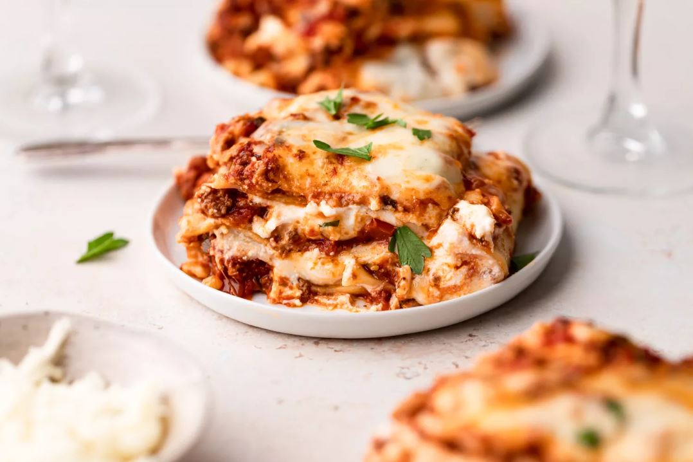

Ingredients
- 1 tbsp olive oil
- 1 onion, diced
- 1 carrot, diced
- 1 celery stalk, diced
- 2 garlic cloves, finely sliced
- 250g beef mince
- 250g pork mince
- 1 tbsp tomato purée
- 400g tin chopped tomatoes
- 200ml beef stock
- 200ml red wine
- 1 tsp Worcestershire sauce
- 9-12 lasagne sheets (depending on the size of your baking dish)
- 50g Parmesan, grated
- pack mozzarella, shredded
Method
Lasagna
- In a large pan, heat the olive oil over a low heat
- Fry the onion, carrot, celery and garlic for 5 mins, or until softened.
- Add the mince and fry on a medium heat until golden
- Turn up the heat, pour in the wine and bubble until reduced
- Stir in the tomato purée, chopped tomatoes and stock
- Add in the Worcestershire sauce and simmer for 15 mins and season
White Sauce
- Melt the butter in a small saucepan over a low heat and add the flour
- Whisk until combined and cook on low for 1-2 mins
- Remove from the heat and gradually whisk in the milk until you have a loose sauce
- Season an return to a gentle heat and whisk constantly until the sauce thickens
Baking
- reheat the oven to gas 6, 200°C, fan 180°C
- Layer up the lasagne in a baking dish, starting with a third each of the ragu, then the pasta, then the white sauce
- Top with the Parmesan and mozzarella then bake in the oven for 40-45